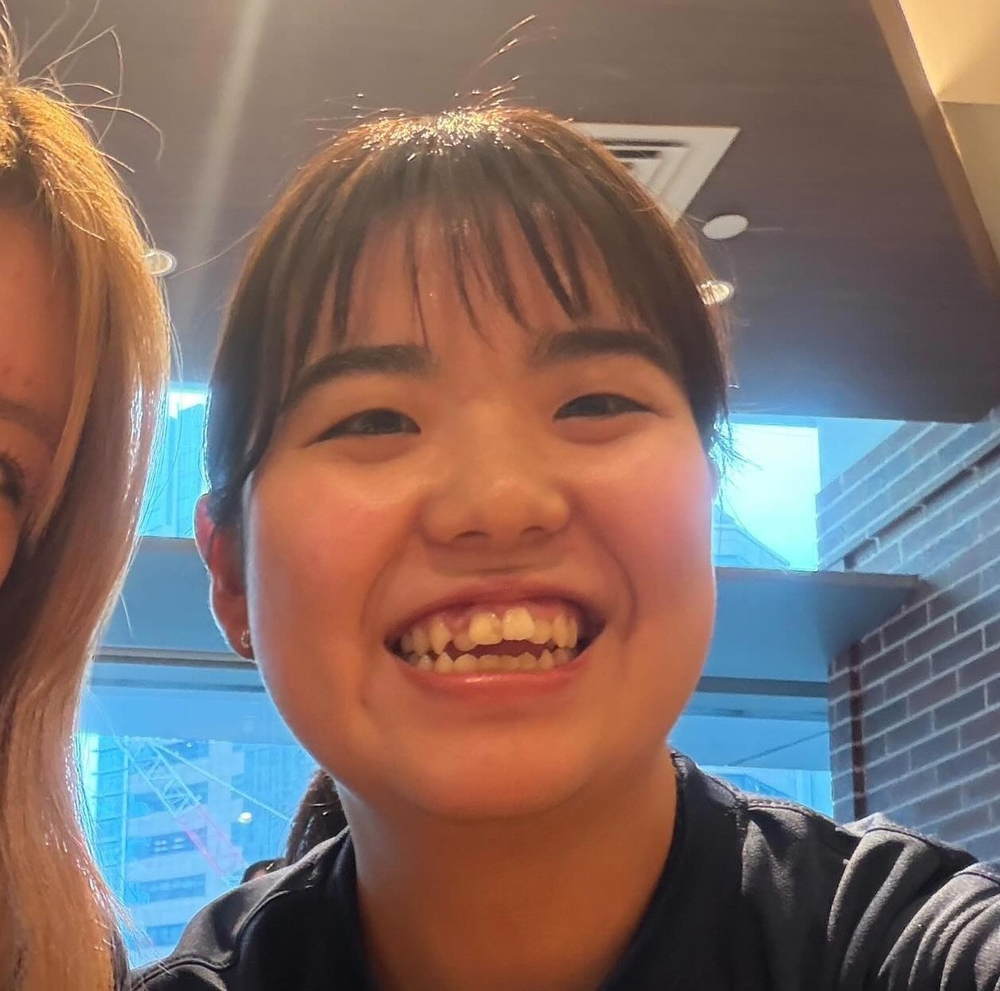

璃乃先生からのコメント

北海道科学大学、情報科学科２年の長澤咲月です。
AIやプログラミングを学ぶ一方で、まだ知らない世界や価値観に触れたいと考えています。
このサイトでは私の学びや挑戦、そしてGLOBAL VOYAGER U25に応募した想いを紹介します。
私は現在、大学でプログラミングやAIなどの情報分野を学んでいます。
大学での学びを深める中で、技術の面白さや魅力を実感する日々を送っています。
同時に、日本だけでなく、もっと世界のいいところを見てみたいという思いが強くなりました。まだ見ぬ景色、異なる文化、 多様な価値観を持つ人たちと出会うこと。
それが私の人生を大きく広げてくれると信じています。
情報があふれる時代だからこそ、私は物事を正しく判断し、流されることなく自分の言葉で伝えられる人になりたいと考えています。そのためには知識だけでなく、多様な価値観や世界の現実を知ることも必要だと思っています。
正直に言うと、私は自分に強い自信がある人間ではありません。海外に対しても、「怖い」「遠い世界」というイメージを持っています。それでも、情報に騙されず、自分で見て、感じて、考えるということを大切にしたいです。自分を知り、成長したいという気持ちや、自分の知っている世界だけで物事を判断したくないという思いは人一倍強いです。
今回のGLOBAL VOYAGER U25への応募は、私にとって大きな一歩です。不安や緊張がないわけではありません。しかしそれ以上に、「常識の外へ出て、世界の現実に触れる」という考え方に強く惹かれました。
今の自分に足りないものは、誰かの話を聞くだけではなく、自分自身の目で世界を見て、自分自身で考える経験だと思っています。
「Beyond the Map（地図の向こうへ）」という言葉のように、私はまだ見たことのない世界へ踏み出したいです。その好奇心と、この挑戦を支えてくれる仲間や環境が、私の背中を押してくれています。
IT先進都市であるベンガルールで、多様な価値観や挑戦する人々に触れ、自分の可能性を広げたいです。そして、自分の小ささも可能性も受け止めながら、世界の中で自分は何ができるのかを考えたいと思っています。
この挑戦は、私にとって世界を知り、自分を知るための第一歩です。
そして、この挑戦は決して自分一人の力だけで実現するものではありません。支えてくださる方々への感謝を忘れず、一つひとつの出会いや学びを大切にしたいと思っています。
私はまだ未完成です。
だからこそ、自分の可能性から逃げず、この挑戦に本気で向き合いたいと思っています。
